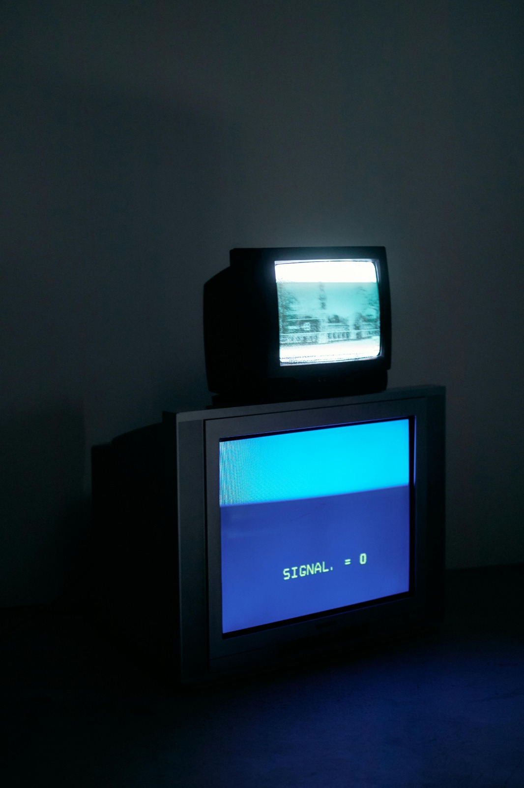

- Desarrollo. Su desarrollo fue a principios del siglo XX que con contribuciones de inventores como John Logie Baird y Philo Farnsworth, quienes realizaron algunas de las primeras transmisiones experimentales.
- Primeras emisiones. En la década de 1930, comenzaron las primeras transmisiones televisivas regulares en paísea como el Reino Unido y Estados Unidos, aunque su expansioón fue interrumpida por la segunda guerra mundial.
- crecimiento. Su crecimiento fue dado entre las décadas de 1950 y 1960, la televisión se convirtió en un medio masivo, transformando la cultura popular y la comunicación de entretenimiento, noticias y eventos depotivos en vivo.
- Era digital. A finales del siglo XX y a principios del siglo XXI la televisión experimentó una revolución digital con la introducción de la televisión por cable, satélite y en línea, aumentando la cantidad de contenido disponible y cambiando la forma de consumo.

También dejaron de funcionar las televisiones analogicas entre 2014-2015 al menos con una extensión que les permitiera observar ciertos canales.